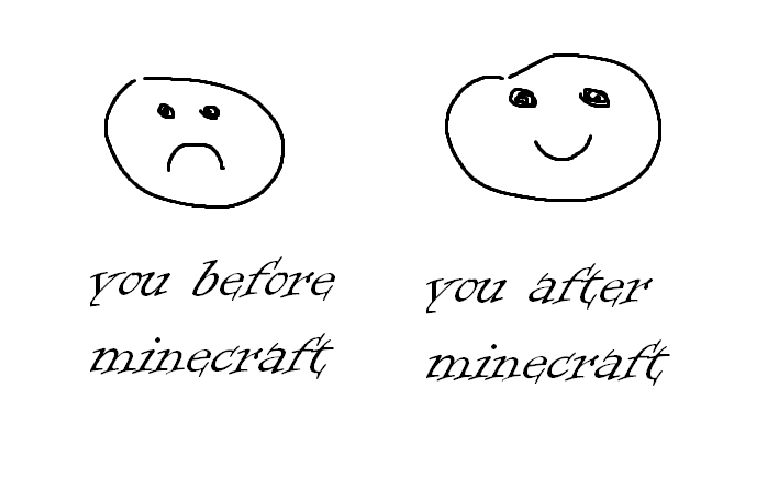

Our Purpose
We work at and succeed in making you happy by supporting the interaction between you and your friends in minecraft. You want to talk to them-we have a discord server. You want to compete with them-we have a uniquely balanced points system coupled with a server-wide leaderboard.
Our Beginnings
Our lord and savior Jaeheon Shim used precious server storange on hosting a minecraft server for his friends to play together on. This server gained a lot of traction, and absorbed the lives of many involved for a good 2 months. The server died soon after the 2021-22 school year ended, but now in the new school year we have time for a new server! Using what we learned in the making of the first server, we now have many new additions to make the game more spicy, including a points value system, a leaderboard, and this website!